Das Hörspiel
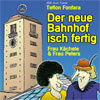
Der neue Bahnhof isch fertig
Frau Kächele & Frau Peters, von Teflon Fonfara
Hörspiel-Download in allen großen Portalen wie auch bei HöBu.
Download
Trailer
SDR-Kult-Comedy
Frau Kächele & Frau Peters erleben Stuttgart 21. Erhältlich als Hörspiel und als Buch.
Das Hörspiel

Frau Kächele & Frau Peters, von Teflon Fonfara
Hörspiel-Download in allen großen Portalen wie auch bei HöBu.
DownloadDas Buch
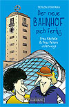
Frau Kächele & Frau Peters unterwegs, von Teflon Fonfara
Das kleine Geschenk für alle Momente.
BestellenDie Mitwirkenden
Die SDR-Kultweiber Frau Kächele & Frau Peters aus dem Wilden Süden besichtigen den neuen Stuttgarter Bahnhof und erleben dort unfassbare Abenteuer und skurrile Geschichten zu Stuttgart 21.
Frau Kächele & Frau Peters, die Hefezopf liebenden Damen, erleben unfassbare Abenteuer im neuen Stuttgarter Bahnhof. Gleich zu Anfang müssen sie ein »Hopftraining« absolvieren, um auf den schräg angelegten Bahnsteigen den ständig vorbeirollenden Koffern und Kinderwägen aus dem Weg springen zu können.
Statt Zug zu fahren – laufend fallen welche aus oder kommen zu spät –, besichtigen sie den zum Eventtempel mutierten Bahnhof. Wegen eines Wassereinbruchs fahren sie schließlich statt mit der Bahn im Tretboot durch die Tunnel nach Ulm. Doch dann biegen sie falsch ab, stürzen einen Wasserfall hinab und landen in der Neckarschleuse neben einem Kreuzfahrtschiff. Als sie erfahren, dass im ICE Waschmaschinen stehen, in denen Schwarzgeld gewaschen wird, machen sich die Damen mit detektivischem Gespür daran, eine Verschwörung aufzudecken …
Ein surreales Vergnügen voller aberwitziger Einfälle. Von Teflon Fonfara, dem Erfinder der heißgeliebten Kult-Comedy rund um die beiden schwäbischen Originale.
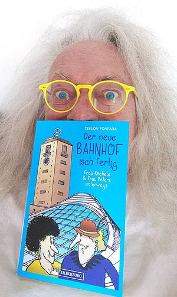
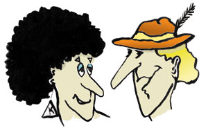
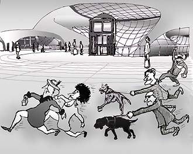
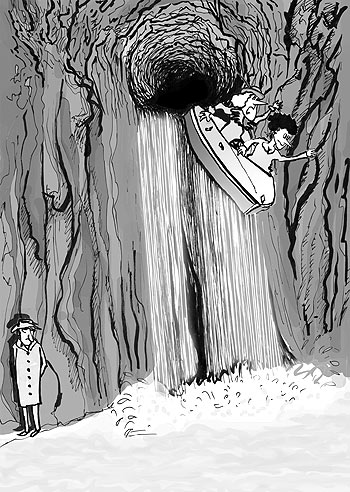
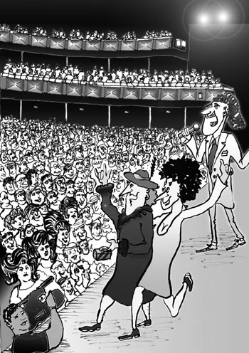
Einzelne CDs gibt es nur noch auf Anfrage solange Vorrat reicht. Anfrage per Mail an teflon@fonfara.de.
Preis pro CD Euro 15,– zuzügl. Versand innerhalb Deutschland Euro 2,50, europaweit Euro 4,–, weltweit Euro 7,–.
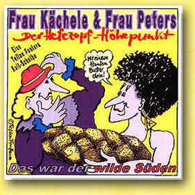
(Das war der Wilde Süden)
CD mit 39 Original-Radio-Slapsticks. Gesamt-Laufzeit 72:36 Minuten. GEMA Text/Musik: Teflon Fonfara
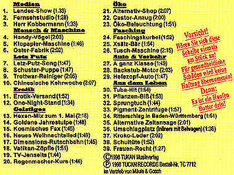
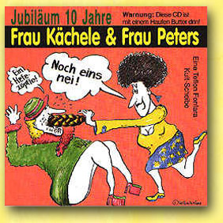
(Noch eins nei!)
CD mit 36 Titeln, davon 31 Original-Radio-Slapsticks und 5 House/Techno-Songs. Gesamt-Laufzeit 72:44 Min. Text/Musik: Teflon Fonfara GEMA
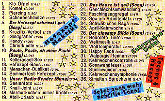
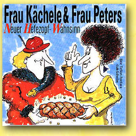
CD mit 38 Titeln, davon 33 Original Radio-Slapsticks und 5 Songs. Gesamt-Laufzeit 73:11 Min. Text/Musik: Teflon Fonfara – GEMA
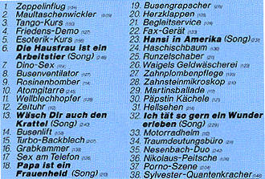
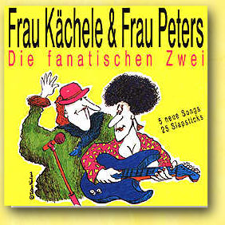
CD mit 30 Titeln, davon 25 Original-Radio-Slapsticks und 5 Songs. Gesamt-Laufzeit 73:46 Min. Text/Musik: Teflon Fonfara – GEMA
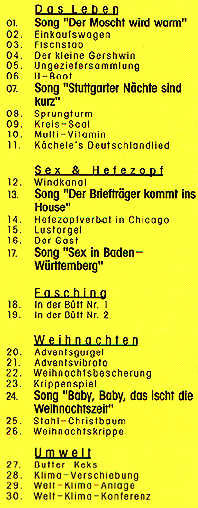
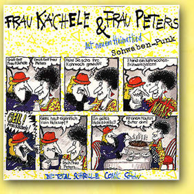
LP mit 23 Titeln gesamt. Text/Musik: Teflon Fonfara – GEMA
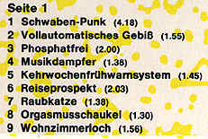
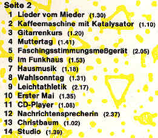
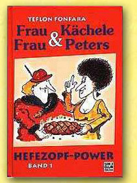
Das Original-Textbuch
von Teflon Fonfara · Jolly Edition Gatzanis Verlag
Die Szenen von Frau Kächele & Frau Peters werden immer wieder gerne von Laiengruppen und Mini-Theatern bei Schulaufführungen, Uni-Festen oder „Hefezopf-Parties“ aufgeführt und nachgespielt. Deshalb gab es immer wieder viele Anfragen bezüglich der Original-Texte.
Kopierte Original-Texte jedoch konnten nicht zur Veröffentlichung weitergegeben werden, weil sie alle nur handschriftlich existieren und nur der Autor Teflon Fonfara selbst kann den schwäbisch-skurrilen Text entziffern, den nur er selbst bei den Aufnahmen auch sprach.
Wegen dieser Nachfrage wurde das Textbuch mit entsprechendem Aufwand zusammengestellt und von Teflon Fonfara illustriert.
Erhältlich bei Gatzanis